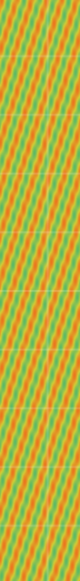
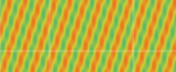
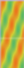
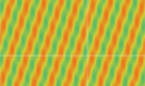

home
>
数据生成

CPU
24%

GPU
21%

MEM
4.3/16GB
已连接 (v2023b)
信号源库
全部
实采
参数化仿真
临时模版
+ 新增数据源
QPSK 参数化实例 15
仿真
随机参数 · 随机突发 · 自动放置

LTE 常驻实例 18
实采
随机抽取 · 全时常驻 · 自动放置
QPSK 参数化实例 15
临时
随机参数 · 随机突发 · 自动放置
QPSK 参数化实例 17
仿真
随机参数 · 随机突发 · 自动放置
宽带样本集规格
生成样本集数量
采样率
背景噪声功率
场景布局
禁止时频二维重叠
输出设置
数据源名称
IQ 格式
标签格式
中心频率
单样本集时长

固定频率
控制跳频
随机时频
信号环境
SNR范围
～
dB
dB
允许带宽变化
带宽切换概率
高级场景参数
频谱边缘保护
信号间最小频率间隔
突发最小时间间隔
突发最大时间间隔
控制跳频时间单元
随机种子
重叠概率
%
%
最大重叠比例
生成宽带样本集
时间(s)
6
5
4
3
2
1
0
10
9
8
7
相对频率 / MHz
10
5
0
-5
-10
-15
-20
20
15
0dB
-80dB
隐藏标签
显示标签




LTE·实采
WiFi·实采
QPSK 参数化实例 01
4FSK 临时实例 01
WiFi·实采
%
0
刷新
保存为模版
加载模版
>
宽带信号生成


12


工作台
数据生成
数据管理
数据标注
模型评测
系统设置
模型研发